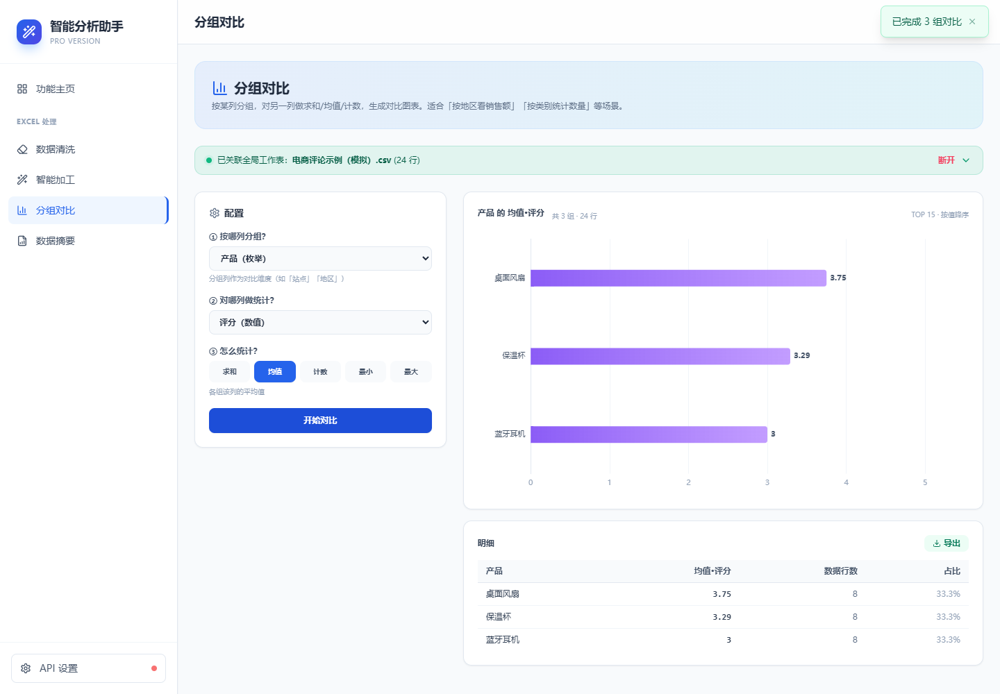

先把噪声拿掉
空白、重复、纯表情、广告……规则给出保留、过滤或待确认。你仍然拥有最后的决定权。
保留过滤待确认
从杂乱的评论，到清晰的反馈。清洗噪声、补充标签、比较差异，再得到一份可读的报告。

7 条过滤 · 1 条待确认 · 每个决定都可复核
FOUR STEPS, ONE WORKFLOW
模块可以单独使用。
也可以围绕同一份数据，逐步得到结论。
空白、重复、纯表情、广告……规则给出保留、过滤或待确认。你仍然拥有最后的决定权。
批量翻译、情感分析、主题分类。选一个模板，或让 AI 按你的需求设计新增列。
按产品、渠道或地区分组，对评分、点赞数等求和、求均值或计数。图表与明细一起呈现。
查看列类型、分布和缺失情况，再按你关心的主题生成报告。新增的 AI 标签也能一起分析。
A SMALL DATASET, A COMPLETE STORY
32 行模拟电商评论，8 个字段。
有真实语境，也有一点小麻烦。
00 / YOUR ORIGINAL DATA
耳机、风扇、保温杯的用户评论。评分、点赞、渠道和时间都在同一张表里。
| 正在加载演示数据… |
按产品分组 / 评分均值
1 条未评分记录不计入均值，待确认记录暂不纳入。
评分是入口，评论是线索。结合标签，继续查看佩戴、通话、噪声或售后的具体反馈。
默认保留的 24 条评论中，蓝牙耳机平均评分为 3.00，桌面风扇为 3.75，保温杯为 3.29。
耳机反馈涉及佩戴舒适度、通话和续航。除了简单好评或差评，也有“音质好但佩戴不舒适”的混合评价。
售后处理结果需要结合上下文。含“加微信”的反馈也可能是真实售后记录，应人工确认。
无需 API Key。演示中的标签与摘要为预设结果，不发送 AI 请求。
INSIDE MAGICEXCEL
真实产品界面截图。
使用模拟数据；加工和摘要展示预设结果。
先自动判断，再人工复核。清洗并不会跳过你的决定。
选择核心处理列，确认想完成的任务。
按需使用模块，在简易与专家模式之间切换。
保留有价值的记录，让结果进入下一步工作。
A FEW THINGS TO KNOW
不需要。MagicExcel 是纯前端应用，读表、规则清洗、画像和分组统计都在浏览器中完成。
使用 AI 功能时，所选文本和任务所需的上下文会发送到你配置的模型服务。API 密钥保存在本地浏览器。静态流程演示使用预设结果，不调用模型。
可以播放这里的完整流程演示，也可以打开工作台试用规则清洗、列画像和分组对比。实际 AI 打标、翻译和摘要需要配置密钥。
网页已适配手机与桌面布局。当前提供浏览器应用，还没有原生手机或桌面安装包。